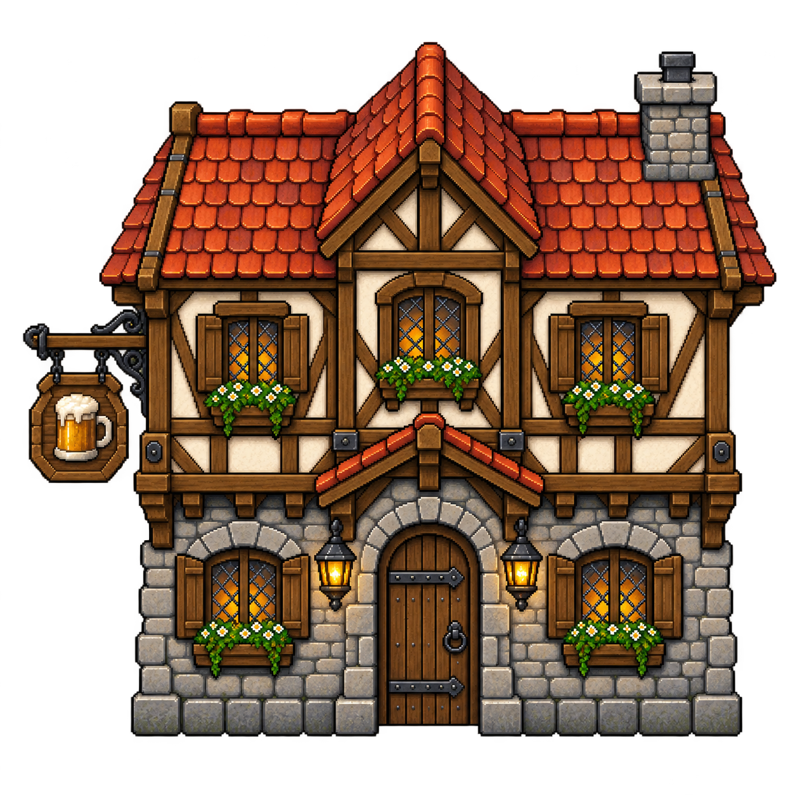

Centro — fachada piloto da Taverna
Etapa 3: novo exterior com madeira, pedra, telhas e placa de caneca, aplicado à cópia de teste. A área ampliada do mapa, o tamanho do jogador e os pontos de interação seguem a escala aprovada.
Esta rodada avalia proporção, perspectiva, materiais e leitura da entrada. O calçamento é um trecho piloto; o restante do terreno e os demais edifícios ainda usam formas provisórias.
Validação funcional: 1/1 teste passou, incluindo a construção da Taverna, acesso aos serviços e ida/volta do interior. A revisão visual é independente: estas quatro capturas são candidatas, sem aprovação automática de baseline.
Fachada completa e proporção com o jogador
 Câmera afastada exclusivamente para revisão da construção inteira. A porta mantém uma proporção próxima de 1,3 vezes a altura do jogador.
Câmera afastada exclusivamente para revisão da construção inteira. A porta mantém uma proporção próxima de 1,3 vezes a altura do jogador.
Entrada com a câmera de jogo
 1920 × 1080. Zoom normal de jogo; a construção pode sair do enquadramento ao aproximar-se.
1920 × 1080. Zoom normal de jogo; a construção pode sair do enquadramento ao aproximar-se. 1366 × 768. Aviso de interação acima do cenário e gestão separada da porta.
1366 × 768. Aviso de interação acima do cenário e gestão separada da porta.Passagem atrás do volume alto
 A fachada fica transparente quando seu volume alto encobre o jogador atrás do lote. O colisor continua limitado à base física.
A fachada fica transparente quando seu volume alto encobre o jogador atrás do lote. O colisor continua limitado à base física.
Ver o sprite isolado

Arte gerada por imagegen e importada sem esticar a imagem. Relatório, medidas, prompts e reprodução.
Teste no Unity e próximo passo
Abra Assets → Scenes → Prototypes → CentroLayoutPrototype e dê Play. Aproxime-se da porta para entrar; use o ponto lateral para gerenciar. A cena usa dados temporários. Centro e Taverna de produção continuam preservados.
Após revisar esta fachada, a etapa 4 leva a mesma direção aos outros quatro exteriores, fundações e terreno, com revisão do conjunto antes da aplicação à cena final.
Revisão da escala aprovada · Relatório das capturas